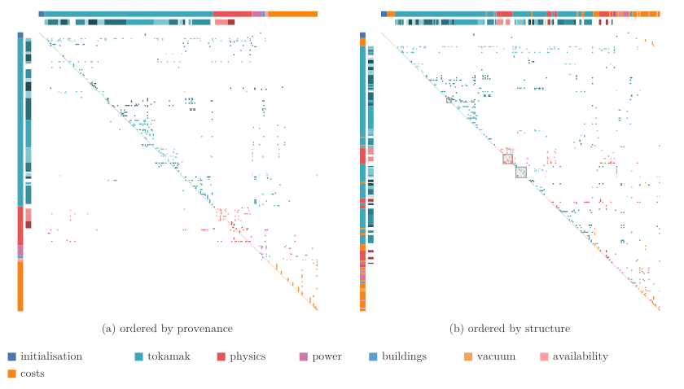

可微反应堆设计：用计算图拆解 PROCESS
Managing complexity for integrated fusion reactor design using a differentiable graph-based MDAO approach: PROCESS as a case study
原文与出版信息 ↗ · 据用户提供版本整理；公式离线预渲染；原图为关键图精选，非全文翻译。
1. 这篇论文解决的不是另一套物理模型
cottax 是多学科设计分析与优化（MDAO）的协调、执行核心：给定一组物理和工程模型，自动识别谁依赖谁、哪些反馈必须联立求解，再把整个流程编译为可微函数。它面向的是“换一组模型、设计变量或目标，是否还要重写调度和求解流程”的软件与数值问题，不是证明某个新反应堆方案可行。
作者以 PROCESS 为案例，展示看起来高度耦合的系统，在按依赖结构重排后只剩几个小耦合块。主要价值是把真实物理耦合与历史代码执行顺序造成的冗余分开。（第 1–4 页）
2. 从纯函数到真正需要迭代的耦合块
每个模型必须是纯函数：结果只依赖明确输入，不修改全局状态或输入对象，不把文件副作用作为隐含通信。于是模型的输入输出就足以建立有向依赖图。基本检查包括每个变量只有一个生产者，节点不读取自己生产的输出。隐式模型并非被禁止，而应显式表示成残差和条件节点。（第 6–8 页）
无环图可以拓扑排序；存在环时，先计算强连通分量（SCC），即相互可达的节点集合。把每个分量缩成一个节点后，所得图必然无环。这意味着只需要在分量内部解决反馈，分量之间按顺序执行，无须把所有模型塞进同一个大固定点迭代。
用本文 Sellar 示例理解：两个学科满足
它们互相依赖，不能只计算各一次；而由已收敛的 计算目标或约束的节点，不需要参与内部迭代。图排序找出的是结构上的最小耦合集合，不保证任意数值算法都能让它收敛。（式 1–3）
3. 核心抽象：把求根器和优化器统一为条件节点
条件节点声明“哪些条件必须满足”以及“允许调整哪些未知量”。固定点 、求根 、带约束最小化 都属于这一结构。具体用 Picard、Newton、SLSQP 还是其他驱动器，是后续可以替换的决定，不应写死在物理函数里。（表 II，第 15 页）
- Cut：切开反馈，把一个读取变量换成副本 ，同时加入一致性条件 。
- Determine：指定条件节点调整的未知量；条件必须实际依赖这些未知量。
- Nest / Combine：明确条件之间的嵌套顺序，或者把未知量与条件合并成一个问题。
- Assign：给条件分配能处理相应问题的驱动器。
可执行性检查还要求：去掉条件节点后功能图无环；每个反馈组件有明确的最外层条件节点；嵌套关系不能成环。这里“可执行”是结构合法，不代表约束一定可行、最优解存在或收敛已获证明。（图 8，第 11 页）
最容易误读的是嵌套：把固定点求解器放在优化器内部，意味着每个设计点评估前都把物理状态收敛；反过来，先在某个未自洽状态下优化，再更新状态，通常改变了求解的问题。作者明确指出，任意图变换目前没有自动的解集等价性保证。（图 7、第 25 页）
4. MDF、IDF、SAND 到底差在哪里
| 架构 | 如何处理内部一致性 | 代价与用途 |
|---|---|---|
| MDF | 每次外层优化迭代内部收敛所有学科耦合。 | 外层变量较少，但一次评估包含内部求解。 |
| IDF | 把学科间耦合副本交给优化器，用等式约束确保一致；各隐式学科内部仍求解。 | 减少跨学科嵌套，增加外层未知量和约束。 |
| SAND | 连隐式学科残差也作为优化约束，同时优化设计与状态。 | 最大程度合并求解，但更大的外层问题不必然更快。 |
这些架构在 cottax 中不是互不兼容的硬编码模板，而是上述基本操作的不同组合。改变架构的收益取决于耦合强度、模型成本和驱动器；本文没有找到全面胜出的架构。（图 9–10、表 III）
可微性的另一半来自隐式求导。补充理解：对于内部状态方程 ，在局部可逆且光滑时，
这把“经过已收敛求解器的导数”与“对若干次未收敛迭代求导”区分开。cottax 使用 JAX 的 JVP/VJP 组合与可用的隐式微分驱动器支持此类链式计算；外部黑箱仍需回调和导数接口，必要时有限差分，而不会自动变成原生可微模型。（第 17–18 页）
5. PROCESS 案例：哪些量化结论站得住
作者把 PROCESS 模型改为纯函数并逐个回归测试，其中使用了 LLM 辅助迁移，对部分不可微函数作轻微平滑。七种配置包括五种优化与两种评估，复现的最优值在作者称为合理容差的量级内一致。因此这是经过测试的移植，而不是毫无改动地换一个后端。（第 19 页）
低长宽比 DEMO 的 242 个节点重排后，只剩 4、8、9 个节点的三个循环块，对应环向线圈绕组包尺寸、等离子体组成、极向场线圈尺寸。HELIAS 示例有 149 个模型与一个求根条件节点；两例仅共用 70 个模型，却能用同一套协调规则。目标和约束不依赖的成本模型被移出优化迭代，不再每一步重复执行。（图 14–19）
| 表 III 选例 | cottax MDF | 原 PROCESS |
|---|---|---|
| stellarator_helias：一次评估 | 0.24 ms | 41 ms |
| 同例：一次 Jacobian | 0.51 ms | 1100 ms |
| 同例：VMCON 迭代数 | 40 | 82 |
| low_aspect_ratio_DEMO：VMCON 迭代数 | 11（SAND 为 19） | 16 |
“优化中的模型时间减少 2–3 个数量级”排除了优化驱动器自身的开销，不能直接当成任意完整优化工作流的统一加速比。表 III 同时给出总 wall time 和 model time，阅读时应保留两列。JAX 编译开销也不在每次热启动评估中；本案例编译均在 5 秒以内。（第 23–24 页）
速度来源不宜只归功于自动微分。作者在 cottax 内改用有限差分后，执行速度与收敛相近，因为这些小型问题接近方阵、使用前向模式。对 stellarator_helias，只逐模型编译但保留 Python 图遍历时约 10 ms；把整个图一起编译后约 0.24 ms，显示消除调度开销贡献约 40 倍。GPU 批量计算是多个独立设计点评估的并行，不等于已实现不同学科模型之间的调度并行。（第 24、26 页）

6. 对科研开发的启示与边界
最可直接借鉴的是先做依赖图与耦合分析，再决定在哪里并行、哪里嵌套、哪里换高保真模型。若把线圈、平衡、中子学和工程模型接到一起，只交换文件却隐藏状态，就很难验证“同一个设计点”是否真的自洽。
但 PROCESS 大多是快速标量计算，对大型高保真求解器或封闭黑箱的整体效率仍需验证。论文尚未实现分布式 MDAO 架构，没有全面展示自定义深层嵌套比标准架构更优；反应堆设计本体、子系统模型及耦合验证仍是后续工作。图能组织物理，不会补足缺失物理。（第 25–27 页）
- 为什么把 SCC 缩点后可以拓扑排序？这与求解器数值收敛有什么不同？
- 若把一个内部固定点改成优化器的等式约束，必须怎样处理变量与一致性，才能保持原问题？
- 移植高成本三维中子学后，本文主要由低开销模型调度获得的加速还能占多大比例？